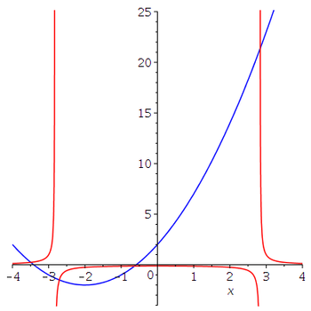
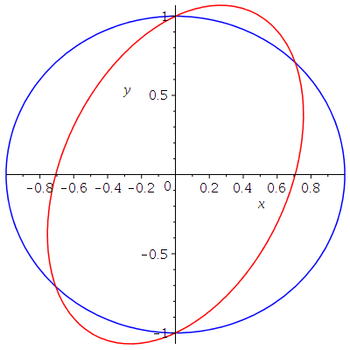

Dans ce document, nous expliquons comment utiliser Maple pour résoudre des (systèmes d') équations non-linéaires.
Nous commençons par chercher les racines du polynôme suivant.
> pe := x^3-x^2+5*x-6=0; spe := solve(pe,x);\[ \begin{split} & pe := x^3 - x^2 + 5 x - 6 = 0 \\ & spe := \ldots \end{split} \]
Nous n'avons par affiché la solution exacte donnée par Maple dans la variable spe car elle occupe plusieurs lignes. Le lecteur devrait exécuter les commandes ci-dessus pour obtenir le long résultat.
La représentation en virgule flottante (avec \(10\) chiffres décimaux) des racines est donnée par la commande suivante.
> fspe:=evalf(spe);\[ 1.157720809, -0.0788604043 + 2.275165423 I, -0.0788604043 - 2.275165423 I \]
Pour obtenir les valeurs exactes de cette liste, nous utilisons les commandes suivantes.
> x1 := fspe[1]; x2 := fspe[2]; x3 := fspe[3];\[ \begin{split} & x1 := 1.157720809 \\ & x2 := -0.0788604043 + 2.275165423 I \\ & x3 := -0.0788604043 - 2.275165423 I \end{split} \]
Exemple: Le but est de trouver les points d'intersection des graphes des deux fonctions définies ci-dessous.
> f1:=1/(x^2-8); f2:=x^2+4*x+2;\[ \begin{split} & f1 := \frac{1}{x^2-8} \\ & f2 := x^2+4x+2 \end{split} \]
Nous cherchons premièrement les valeurs de \(x\) où les graphes se coupent.
> xs := evalf(solve(f1=f2,x));\[ xs := 2.836678210, -.6331032006, -2.707918475, -3.495656534 \]
Il y a quatre racines (voir la figure ci-dessous). Nous aurions pu aussi chercher les racines du polynôme de degré quatre f2(x) / f1(x) - 1 = 0.
> plot1:=plot(f1(x),x=-4..4,-4..25,discont=true,color=red):
> plot2:=plot(f2(x),x=-4..4,-4..25,color=blue):
> with(plots):
> display({plot1,plot2});

Nous avons utilisé l'option discont=true pour produire le graphe de la fonction définie par f1 car cette fonction est discontinue. En fait, il y a des valeurs de \(x\) pour lesquelles la fonction n'est pas définie et où l'on a des asymptotes verticales.
Pour déterminer les coordonnées des points d'intersection, Nous calculons les valeurs de f2 (Nous aurions pu aussi bien choisir f1) à chacune des valeurs de la liste xs.
> f2f := x -> x^2+4*x+2: > ys := seq(f2f(xs[i]), i=1..4);\[ ys := 21.39345611, -.131593139, -1.498851433, .23698846 \]
Nous obtenons les quatre points d'intersection suivant.
> seq([xs[i], ys[i]], i = 1 .. 4);\[ \begin{split} & [2.836678210, 21.39345611], [-0.6331032006, -0.131593139], \\ & \qquad \qquad [-2.707918475, -1.498851433], [-3.495656534, 0.23698846] \end{split} \]
Nous avons utilisé la commande seq() de Maple pour générer la liste de valeurs ci-dessus.
Exemple: Nous voulons trouver les solutions du système suivant composé de deux équations non-linéaires.
> eq1 := 2*x^2-x*y+y^2 = 1; eq2 := x^2+y^2=1;\[ \begin{split} & eq1 := 2x^2-xy+y^2 = 1 \\ & eq2 := x^2+y^2 = 1 \end{split} \]
Nous traçons ces deux courbes dans le plan afin d'estimer la position de leurs points d'intersection. Nous assumons que \(-3 \leq x , y \leq 3\).
> with(plots):
> imp1 := implicitplot(eq1,x=-3..3,y=-3..3,grid=[40,40],color=red):
> imp2 := implicitplot(eq2,x=-3..3,y=-3..3,grid=[40,40],color=blue):
> display({imp1,imp2});

Il semble bien y avoir quatre points d'intersection (i.e. les solutions du système d'équations linéaires). Nous demandons à Maple de trouver ces points.
> fsolve({eq1,eq2},{x,y});
\[ \{y = -1.000000000, x = 0.\} \]
Trois des points manques. L'usage de la fonction solve() ne donne pas plus d'information. Le lecteur devrait l'essayer. La fonction fsolve() utilise une méthode itérative pour trouver les solutions. Pour trouver les autres solution, nous devons fournir une petite région où la fonction fsolve() va chercher une solution.
> fsolve({eq1,eq2},{x,y},{x=0.6..0.8,y=0.6..0.8});
\[ \{x = .7071067812, y = .7071067812 \} \]
Nous obtenons une autre solution. Les deux autres solutions peuvent être trouvées en suivant la même procédure ou simplement en utilisant le fait que les deux équations sont invariantes sous l'action de la réflexion par rapport à l'origine (i.e. \((x,y) \mapsto (-x,-y)\)). Donc, les autres solutions sont données en multipliant les deux solutions ci-dessus par \(-1\).